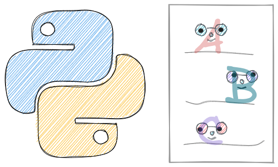

String
Contents
2.1. String#

2.1.1. Control the Number of Printed Decimals with f-Strings#
If you want to limit the number of decimals being printed, use the f-string as shown below.
num = 2.3123
print(f'{num:.1f}') # Limit to 1 decimal
print(f'{num:.2f}') # Limit to 2 decimals
2.3
2.31
2.1.2. Format Dates in Python f-Strings#
When printing a Python string, f-strings allow you to format datetime easily with a curly bracket and its formats.
Find all formats here.
from datetime import datetime
date = datetime(2022, 1, 1, 15, 30, 45)
print(f'You need to be here at'
f' {date:%I:%M %p} on {date:%A}')
You need to be here at 03:30 PM on Saturday
2.1.3. Pad a String With Zero Using f-String#
If you want to pad a string with zero, use f-string.
for hour in range(8, 12):
print(f'It is {hour:02} AM! Wake up!')
It is 08 AM! Wake up!
It is 09 AM! Wake up!
It is 10 AM! Wake up!
It is 11 AM! Wake up!
2.1.4. Use Calculations in Python f-String#
If you want to do calculations inside a Python string, use f-string.
apple = 3
banana = 2
print(f'The total price is {apple + banana}.')
The total price is 5.
2.1.5. Debug Your Python Code with an Equal Sign in an f-String#
It is common to use f"var={var}" to see which values are being printed.
from itertools import permutations
nums = [1, 2, 3]
for i, j in permutations(nums, 2):
print(f"i={i}, j={j}")
i=1, j=2
i=1, j=3
i=2, j=1
i=2, j=3
i=3, j=1
i=3, j=2
In Python 3.8 and above, you can get the same outputs using f"{var=}".
for i, j in permutations(nums, 2):
print(f"{i=}, {j=}")
i=1, j=2
i=1, j=3
i=2, j=1
i=2, j=3
i=3, j=1
i=3, j=2
2.1.6. String find: Find The Index of a Substring in a Python String#
If you want to find the index of a substring in a string, use find() method. This method will return the index of the first occurrence of the substring if found and return -1 otherwise.
sentence = "Today is Saturday"
# Find the index of first occurrence of the substring
sentence.find("day")
2
sentence.find("nice")
# No substring is found
-1
You can also provide the starting and stopping position of the search:
# Start searching for the substring at index 3
sentence.find("day", 3)
15
2.1.7. re.sub: Replace One String with Another String Using Regular Expression#
If you want to either replace one string with another string or to change the order of characters in a string, use re.sub.
re.sub allows you to use a regular expression to specify the pattern of the string you want to swap.
In the code below, I replace 3/7/2021 with Sunday and replace 3/7/2021 with 2021/3/7.
import re
text = "Today is 3/7/2021"
match_pattern = r"(\d+)/(\d+)/(\d+)"
re.sub(match_pattern, "Sunday", text)
'Today is Sunday'
re.sub(match_pattern, r"\3-\1-\2", text)
'Today is 2021-3-7'
2.1.8. Split a String by Multiple Characters#
Using str.split only allows you to split a string by one character.
sent = "Today-is a nice_day"
sent.split('-')
['Today', 'is a nice_day']
If you want to split a string by multiple characters, use re.split(). re uses regrex to split the string.
import re
# split by space, -, or _
re.split(" |-|_", sent)
['Today', 'is', 'a', 'nice', 'day']
2.1.9. Multiline Strings#
If your Python string gets very long, you can break it up using parentheses or a backslash.
text = (
"This is a very "
"long sentence "
"that is made up."
)
text
'This is a very long sentence that is made up.'
text = "This is a very "\
"long sentence "\
"that is made up."
text
'This is a very long sentence that is made up.'
2.1.10. difflib.SequenceMatcher: Detect The “Almost Similar” Articles#
When analyzing articles, different articles can be almost similar but not 100% identical, maybe because of the grammar, or because of the change in two or three words (such as cross-posting). How can we detect the “almost similar” articles and drop one of them? That is when difflib.SequenceMatcher comes in handy.
from difflib import SequenceMatcher
text1 = 'I am Khuyen'
text2 = 'I am Khuen'
print(SequenceMatcher(a=text1, b=text2).ratio())
0.9523809523809523
2.1.11. difflib.get_close_matches: Get a List of the Best Matches for a Certain Word#
If you want to get a list of the best matches for a certain word, use difflib.get_close_matches.
from difflib import get_close_matches
tools = ['pencil', 'pen', 'erasor', 'ink']
get_close_matches('pencel', tools)
['pencil', 'pen']
To get closer matches, increase the value of the argument cutoff (default 0.6).
get_close_matches('pencel', tools, cutoff=0.8)
['pencil']